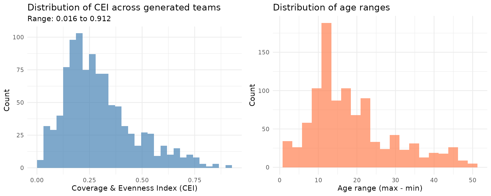
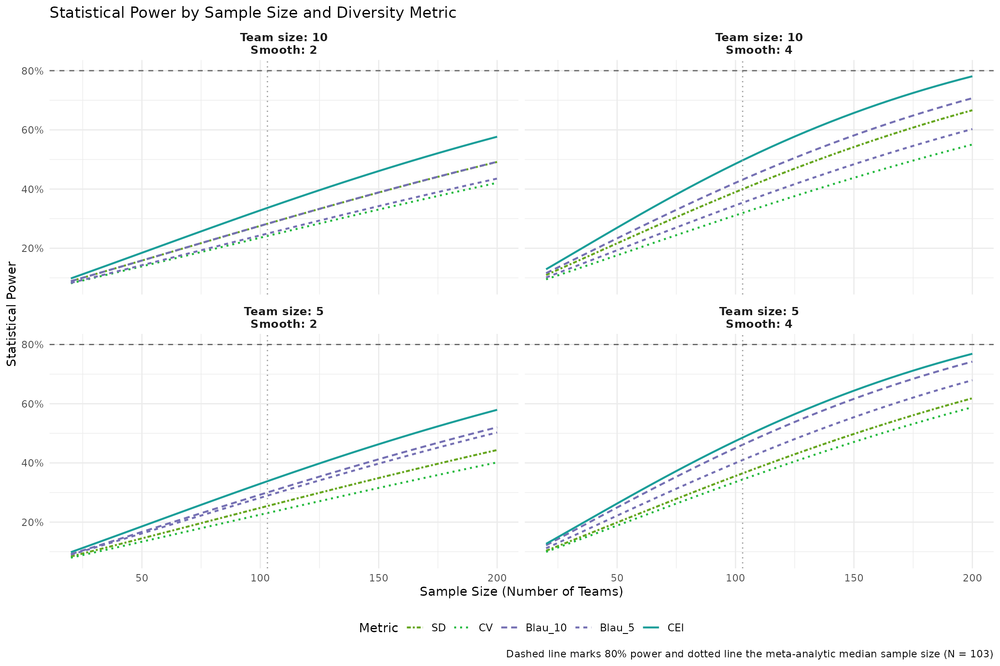

Assessing statistical power depending on measure
Source:vignettes/articles/statistical_power.Rmd
statistical_power.Rmd
# Prefer the development version when rendering from the package repo.
pkg_root <- tryCatch(rprojroot::find_package_root_file(), error = function(e) NULL)
if (!is.null(pkg_root) && requireNamespace("devtools", quietly = TRUE)) {
devtools::load_all(pkg_root, quiet = TRUE)
} else {
library(divMetrics)
}
# Source team generation helper (lives in inst/scripts, not in R/)
tg_path <- system.file("scripts", "team_generation.R", package = "divMetrics")
if (tg_path == "" && !is.null(pkg_root)) {
tg_path <- file.path(pkg_root, "inst", "scripts", "team_generation.R")
}
source(tg_path)
library(dplyr)
library(ggplot2)
library(tidyr)
library(purrr)
library(forcats)
library(scales)
library(gt)
library(pwr)
library(furrr)
library(progressr)
plan(multisession)Introduction
This analysis aims to identify whether different diversity indices have different statistical power to pick up diversity effects. For that, we model diversity effects in line with Hong & Page (2004) https://doi.org/10.1073/pnas.0403723101 and the extension to smoothed landscapes proposed by Grim et al. (2019) https://doi.org/10.1086/701070.
Specifically, we imagine that a team is tasked with finding the best solution to a problem - and model that search as exploring a hilly landscape where each point represents a possible outcome with a quality value. Each team member starts at a different spot on this landscape—here determined by a single attribute that shapes their perspective, such as their age. From their starting point, each member “climbs” to a nearby peak by always moving to a slightly better neighboring solution until no further improvement is possible. The team’s overall performance is measured by the best peak that any member reaches. In this case, diversity means having team members start from varied positions, which increases the chance that at least one person finds a particularly high peak in the landscape. This is in line with models of informational diversity, and allows us to model outcome data and then test whether different diversity indices give us different statistical power to pick up such an effect.
To produce realistically modest effect sizes (correlations around r ≈ 0.2), we add random noise to team performance. This noise represents all the other factors that affect team outcomes beyond diversity alone—such as individual skills, team resources, coordination quality, motivation, and task-specific knowledge. Without this noise, the simulation would produce unrealistically large diversity effects. The resulting effects stay within the small range highlighted by the meta-analysis of Wallrich et al. (2024) https://doi.org/10.1007/s10869-024-09977-0.
Simulation approach
The agent-based model follows Hong & Page’s (2004) hill-climbing setup while allowing for different information landscapes as in Grim et al. (2019). Ages stand in for a single salient informational attribute, with teams sampled from a workplace-relevant range of 20-70 years (a 50-year span). Team diversity is generated using a role-based process that samples members around a small number of career-stage “anchors” (roughly 5-year wide) under several plausible staffing patterns: single-cohort teams; adjacent “career ladder” teams with a seniority pyramid; balanced multi-role teams (sometimes spanning a wider age range, sometimes compressed); and tokenism teams with one dominant cohort plus one or two far-away token members. This setup intentionally varies coverage and evenness somewhat independently, creating many teams that share similar SD/CV or Blau values while differing substantially in the variety-like distributional features CEI is designed to capture. Diversity is then measured with several commonly used indices, including the Coverage & Evenness Index (CEI), Blau, Gini Mean Difference (GMD), coefficient of variation, and standard deviation, all referenced to the same 20-70 range so that comparisons remain consistent across teams.
Each simulated team explores a landscape of 50 positions, matching the 50-year age span. We vary two structural factors: team size (5 vs. 10 members) and landscape smoothness (2 vs. 4). Lower smoothness values produce rugged landscapes where diversity offers greater search benefits, whereas higher smoothness values imply diminishing returns to diversity (Grim et al., 2019). Performance is defined as the highest local peak reached when each team member hill-climbs from their starting position. Under landscapes where some regions systematically have higher peaks (e.g., one side or the middle), teams benefit from covering more distinct regions, plus noise representing other determinants of outcomes.
Simulation Setup
#--- Simulation setup ---
## Generate landscape of a given length and smoothness
# The smooth_window parameter controls how "smooth" or "rugged" the
# landscape is:
# - Lower values (e.g., 1-2) create a more rugged landscape with many
# local peaks
# - Higher values (e.g., 6-8) create a smoother landscape with fewer,
# broader peaks
# In Hong & Page's model, smoother landscapes reduce the advantage of
# diversity
# The default n = 50 matches the 50-year age range (20-70) used for
# team generation
# Uses circular/wrap-around smoothing to avoid edge artifacts
# add_gradient: If TRUE, adds a macro-scale structure (linear/quadratic/none)
# where some regions systematically have higher peaks than others. This
# ensures that team coverage matters: teams that start from a wider range of
# positions are more likely to include at least one member close to the best
# region.
# gradient_weight: Controls the relative contribution of macro gradient
# vs micro ruggedness. 0 = pure rugged landscape, 1 = pure gradient,
# 0.3 = balanced mix. Keeping it moderate (0.2-0.4) maintains
# r ≈ 0.2 effect sizes.
generate_landscape <- function(n,
lower = 0,
upper = 100,
smooth_window = 3,
add_gradient = TRUE,
gradient_weight = 0.3) {
# Generate local ruggedness with circular smoothing
local_noise <- runif(n, min = lower, max = upper)
pad_size <- floor(smooth_window / 2)
circular_points <- c(
local_noise[(n - pad_size + 1):n],
local_noise,
local_noise[1:pad_size]
)
smooth_circular <- stats::filter(
circular_points,
rep(1 / smooth_window, smooth_window),
sides = 2
)
micro <- as.numeric(smooth_circular[(pad_size + 1):(pad_size + n)])
# Add macro-scale structure (non-circular to preserve structure)
if (add_gradient) {
# Randomly choose macro structure type for each landscape.
gradient_type <- sample(
c("linear", "quadratic", "none"),
1,
prob = c(0.4, 0.4, 0.2)
)
if (gradient_type == "linear") {
# Linear gradient: one side systematically better than the other
gradient_direction <- sample(c(-1, 1), 1)
macro <- seq(0, 1, length.out = n) * gradient_direction
} else if (gradient_type == "quadratic") {
# Quadratic: middle or edges systematically better
x <- seq(-1, 1, length.out = n)
# Parabola up (edges better) or down (middle better)
shape <- sample(c(1, -1), 1)
macro <- shape * x^2
} else {
# No gradient - flat structure
macro <- rep(0, n)
}
} else {
macro <- rep(0, n)
}
# Standardize components separately so they contribute on same scale
macro_std <- scales::rescale(macro, to = c(0, 100))
micro_std <- scales::rescale(micro, to = c(0, 100))
# Combine with weighted contributions (weights sum to 1)
combined <- gradient_weight * macro_std + (1 - gradient_weight) * micro_std
# Final rescaling to target range
landscape <- scales::rescale(combined, to = c(lower, upper))
as.numeric(landscape)
}
# Hill climbing with bounded exploration:
# each agent moves to adjacent positions that improve their score until
# reaching a local maximum (peak).
hill_climb <- function(start, landscape) {
if (start > length(landscape) || start < 1) {
stop("Starting position out of bounds.")
}
pos <- start
repeat {
left_val <- if (pos > 1) landscape[pos - 1] else -Inf
right_val <- if (pos < length(landscape)) landscape[pos + 1] else -Inf
current <- landscape[pos]
if (left_val <= current && right_val <= current) break
pos <- if (left_val >= right_val) pos - 1 else pos + 1
}
landscape[pos]
}
# Team performance is the best peak found by any team member
team_hill_climb <- function(team_starts, landscape) {
peaks <- sapply(team_starts, function(start) hill_climb(start, landscape))
max(peaks)
}
## Generate teams with varying diversity levels
# Reuse the same role-based generator as in the metric comparison vignette,
# but with a mix emphasising teams that occupy a similar number of age strata
# while differing in how far those strata span the full 20–70 range. This
# creates many cases where Blau (bin occupancy) is similar but coverage differs.
team_profile_probs <- c(
single_cohort = 0.05,
career_ladder = 0.10,
balanced_roles = 0.35,
compact_balanced = 0.45,
tokenism = 0.05
)
generate_team <- function(size, n_teams, ...) {
generate_age_teams(size, n_teams, profile_probs = team_profile_probs, ...)
}
# Helper function to parse comma-separated string into numeric vector
parse_members <- function(x) {
as.numeric(unlist(strsplit(x, ",\\s*")))
}
# Simulation function that returns detailed team scores
# noise_factor: Controls the amount of random noise added to team
# performance. This represents other factors affecting performance
# beyond diversity (e.g., skills, resources, coordination,
# motivation). Higher values produce more realistic (smaller) effect
# sizes.
run_simulation <- function(team_size,
smooth_window,
n_teams = 250,
n_landscapes = 250,
noise_factor = 2,
perspective_block = 1,
teams = NULL) {
if (is.null(teams)) {
teams <- generate_team(team_size, n_teams)
}
# Calculate diversity metrics per team
team_data <- compute_CEI(
teams$age,
group = teams$team_id,
range = c(20, 70),
return_df = TRUE
) %>%
rename(CEI = index_value) %>%
left_join(
teams %>%
group_by(team_id) %>%
summarise(
team_size = first(team_size),
diversity_profile = first(diversity_profile),
diversity_prop = first(diversity_prop),
Blau_5 = compute_Blau(age, bins = seq(20, 70, by = 5)),
Blau_10 = compute_Blau(age, bins = seq(20, 70, by = 10)),
GMD = compute_GMD(age),
CV = compute_cv(age),
SD = compute_sd(age),
.groups = "drop"
),
by = c("group" = "team_id")
)
# Simulate landscapes and team performance
landscapes <- map(
1:n_landscapes,
~generate_landscape(n = 50, smooth_window = smooth_window)
)
# Calculate a constant noise SD based on typical landscape variance
# Use the SD of raw unsmoothed landscapes to ensure constant noise
# across conditions
constant_noise_sd <- sd(runif(50, min = 0, max = 100)) * noise_factor
peaks <- tibble(
id = 1:(nrow(team_data) * length(landscapes)),
team = NA_character_,
result = NA_real_,
landscape_id = NA_integer_
)
i <- 1
for (landscape_idx in seq_along(landscapes)) {
landscape <- landscapes[[landscape_idx]]
for (team in team_data$group) {
team_members <- team_data %>%
filter(group == team) %>%
pull(group_members) %>%
parse_members()
team_positions <- scales::rescale(
team_members,
from = c(20, 70),
to = c(1, length(landscape))
)
team_positions <- round(team_positions)
team_positions <- pmin(pmax(team_positions, 1), length(landscape))
# Optional coarsening of starting positions (if desired for sensitivity
# checks): treat near-aged members as starting from effectively the same
# region, which further privileges coverage over redundancy.
if (!is.null(perspective_block) && perspective_block > 1) {
team_positions <- ((team_positions - 1) %/% perspective_block) * perspective_block + 1
team_positions <- pmin(pmax(team_positions, 1), length(landscape))
}
team_positions <- unique(team_positions)
# Each member hill-climbs from their starting position; team picks the
# best peak any member reaches.
peak_raw <- team_hill_climb(team_positions, landscape)
# Add constant noise to represent other factors affecting team
# performance (skills, resources, coordination, motivation,
# task-specific knowledge, etc.)
# Noise is constant across landscape types to ensure fair
# comparison
peak <- peak_raw + rnorm(1, mean = 0, sd = constant_noise_sd)
peaks[i, ] <- list(i, team, peak, landscape_idx)
i <- i + 1
}
}
# Standardise variance within each landscape so every landscape
# contributes equally
peaks <- peaks %>%
group_by(landscape_id) %>%
mutate(result = scale(result, center = FALSE)) %>%
ungroup()
# Merge team diversity details
peaks_joined <- peaks %>%
left_join(team_data, by = c("team" = "group"))
peaks_joined
}Verify team generation produces full diversity range
Before running the full simulation, we verify that the team generation approach creates teams spanning the full range from minimal to maximal diversity:
# Generate a sample of teams to check diversity distribution
set.seed(123)
diagnostic_teams <- generate_team(
size = 5,
n_teams = 1000
)
# Calculate CEI for diagnostic purposes
diagnostic_diversity <- diagnostic_teams %>%
group_by(team_id) %>%
summarise(
CEI = compute_CEI(age, range = c(20, 70)),
min_age = min(age),
max_age = max(age),
range_span = max_age - min_age,
.groups = "drop"
)
# Plot distribution of diversity scores
p1 <- ggplot(diagnostic_diversity, aes(x = CEI)) +
geom_histogram(bins = 30, fill = "steelblue", alpha = 0.7) +
labs(
title = "Distribution of CEI across generated teams",
subtitle = paste0(
"Range: ",
round(min(diagnostic_diversity$CEI), 3),
" to ",
round(max(diagnostic_diversity$CEI), 3)
),
x = "Coverage & Evenness Index (CEI)",
y = "Count"
) +
theme_minimal()
# Plot range span distribution
p2 <- ggplot(diagnostic_diversity, aes(x = range_span)) +
geom_histogram(bins = 20, fill = "coral", alpha = 0.7) +
labs(title = "Distribution of age ranges",
x = "Age range (max - min)", y = "Count") +
theme_minimal()
gridExtra::grid.arrange(p1, p2, ncol = 2)
# Summary statistics
cat("CEI Summary:\n")
#> CEI Summary:
print(summary(diagnostic_diversity$CEI))
#> Min. 1st Qu. Median Mean 3rd Qu. Max.
#> 0.0160 0.1760 0.2600 0.2959 0.3770 0.9120
cat("\nAge Range Summary:\n")
#>
#> Age Range Summary:
print(summary(diagnostic_diversity$range_span))
#> Min. 1st Qu. Median Mean 3rd Qu. Max.
#> 2.00 11.00 16.00 18.59 23.00 50.00The diagnostic plots confirm that the team generation produces a good spread of diversity levels across the 20-70 age range, from very homogeneous teams (low CEI, narrow age range) to various diverse configurations including uniform, bimodal, and skewed teams (higher CEI values representing different patterns of age distribution).
Run simulations
The simulation systematically varies team size (5 vs 10) and landscape smoothness (2 vs 4) in a 2x2 factorial design. Each condition is replicated across multiple landscapes explored by multiple teams.
Note on computation time: The full simulation is implemented as 100 independent replications per condition. Each replication averages team performance across 10 landscapes, and then computes the correlation between diversity and performance (one correlation per replication). On a typical laptop this should run in well under a minute; results are cached.
set.seed(1234)
# Simulation parameters
total_teams <- 1000 # Teams per condition
replications <- 100 # Independent study replications per condition
landscapes_per_replication <- 10 # Tasks/time points per study
noise_factor <- 2 # Calibrates effect sizes to ~r = 0.2
perspective_block <- 1 # Optional coarsening of start positions
make_starts <- function(ages, landscape_n = 50) {
pos <- scales::rescale(ages, from = c(20, 70), to = c(1, landscape_n))
pos <- round(pos)
pos <- unique(pmin(pmax(pos, 1), landscape_n))
if (!is.null(perspective_block) && perspective_block > 1) {
pos <- ((pos - 1) %/% perspective_block) * perspective_block + 1
pos <- unique(pmin(pmax(pos, 1), landscape_n))
}
pos
}
summarise_teams <- function(team_size, n_teams) {
teams <- generate_team(team_size, n_teams)
teams %>%
group_by(team_id) %>%
summarise(
starts = list(make_starts(age)),
CEI = compute_CEI(age, range = c(20, 70)),
Blau_5 = compute_Blau(age, bins = seq(20, 70, by = 5)),
Blau_10 = compute_Blau(age, bins = seq(20, 70, by = 10)),
GMD = compute_GMD(age),
CV = compute_cv(age),
SD = compute_sd(age),
.groups = "drop"
)
}
simulate_replication <- function(team_df, smooth_window) {
n <- 50L
constant_noise_sd <- stats::sd(stats::runif(n, min = 0, max = 100)) * noise_factor
perf_sum <- numeric(nrow(team_df))
for (k in seq_len(landscapes_per_replication)) {
landscape <- generate_landscape(n = n, smooth_window = smooth_window)
peak_map <- vapply(seq_len(n), hill_climb, landscape = landscape, numeric(1))
perf <- vapply(team_df$starts, function(starts) max(peak_map[starts]), numeric(1))
perf <- perf + stats::rnorm(length(perf), mean = 0, sd = constant_noise_sd)
# Standardise variance within each landscape so every landscape contributes equally
perf_sum <- perf_sum + as.numeric(scale(perf, center = FALSE))
}
result_mean <- perf_sum / landscapes_per_replication
tibble(
metric = c("CEI", "Blau_5", "Blau_10", "GMD", "CV", "SD"),
correlation = c(
cor(result_mean, team_df$CEI, use = "complete.obs"),
cor(result_mean, team_df$Blau_5, use = "complete.obs"),
cor(result_mean, team_df$Blau_10, use = "complete.obs"),
cor(result_mean, team_df$GMD, use = "complete.obs"),
cor(result_mean, team_df$CV, use = "complete.obs"),
cor(result_mean, team_df$SD, use = "complete.obs")
)
)
}
conditions <- tidyr::crossing(
team_size = c(5L, 10L),
smooth_window = c(2L, 4L),
chunk = seq_len(replications)
)
pre_generated_teams <- tidyr::crossing(
team_size = c(5L, 10L)
) %>%
mutate(teams = purrr::map(team_size, ~ summarise_teams(.x, total_teams)))
conditions <- conditions %>%
left_join(pre_generated_teams, by = "team_size")
replication_corr <- with_progress({
p <- progressr::progressor(steps = nrow(conditions))
purrr::pmap_dfr(
conditions,
function(team_size, smooth_window, chunk, teams) {
out <- simulate_replication(teams, smooth_window = smooth_window)
p()
out %>% mutate(team_size = team_size, smooth_window = smooth_window, chunk = chunk)
}
)
})
replication_corr
#> # A tibble: 2,400 × 5
#> metric correlation team_size smooth_window chunk
#> <chr> <dbl> <int> <int> <int>
#> 1 CEI 0.170 5 2 1
#> 2 Blau_5 0.151 5 2 1
#> 3 Blau_10 0.140 5 2 1
#> 4 GMD 0.154 5 2 1
#> 5 CV 0.144 5 2 1
#> 6 SD 0.137 5 2 1
#> 7 CEI 0.108 5 2 2
#> 8 Blau_5 0.175 5 2 2
#> 9 Blau_10 0.165 5 2 2
#> 10 GMD 0.0901 5 2 2
#> # ℹ 2,390 more rowsEstimating the effects
We estimate effect sizes and power by averaging team performance across 10 different landscapes, which could reflect a typical study where team performance is measured over time or with multiple items. Specifically, the simulation
- Averages each team’s performance across 10 landscapes
- Computes the correlation between diversity and performance across the full team sample
- Contributes one estimate to the distribution summarised below
This approach mirrors empirical studies where team performance is assessed across multiple tasks while providing 100 independent replications per simulation condition.
Throughout, sample size refers to the number of teams. Power calculations use two-sided tests with alpha = 0.05.
# Helper functions to avoid power calculation errors when correlations are ~0
safe_required_n <- function(r, power_target = 0.9) {
purrr::map_dbl(r, function(r_val) {
if (is.na(r_val) || abs(r_val) < 1e-6) {
return(NA_real_)
}
tryCatch(
pwr::pwr.r.test(r = abs(r_val),
power = power_target,
sig.level = 0.05,
alternative = "two.sided")$n,
error = function(e) NA_real_
)
})
}
safe_power <- function(r, n) {
purrr::map2_dbl(r, n, function(r_val, n_val) {
if (is.na(r_val) || abs(r_val) < 1e-6) {
return(NA_real_)
}
tryCatch(
pwr::pwr.r.test(r = abs(r_val),
n = n_val,
sig.level = 0.05,
alternative = "two.sided")$power,
error = function(e) NA_real_
)
})
}
# Aggregate across replications: mean effect size and its SE
summary_corr <- replication_corr %>%
group_by(team_size, smooth_window, metric) %>%
summarize(
mean_r = mean(correlation),
se_r = sd(correlation) / sqrt(n()),
.groups = "drop"
) %>%
mutate(
mean_n_req_80 = safe_required_n(mean_r, power_target = 0.80),
mean_n_req_90 = safe_required_n(mean_r, power_target = 0.90)
)
summary_corr
#> # A tibble: 24 × 7
#> team_size smooth_window metric mean_r se_r mean_n_req_80 mean_n_req_90
#> <int> <int> <chr> <dbl> <dbl> <dbl> <dbl>
#> 1 5 2 Blau_10 0.142 0.00402 386. 516.
#> 2 5 2 Blau_5 0.139 0.00414 403. 539.
#> 3 5 2 CEI 0.152 0.00381 335. 448.
#> 4 5 2 CV 0.121 0.00548 533. 712.
#> 5 5 2 GMD 0.140 0.00392 395. 528.
#> 6 5 2 SD 0.129 0.00418 472. 631.
#> 7 5 4 Blau_10 0.183 0.00374 230. 307.
#> 8 5 4 Blau_5 0.171 0.00373 266. 355.
#> 9 5 4 CEI 0.189 0.00407 216. 288.
#> 10 5 4 CV 0.154 0.00635 328. 439.
#> # ℹ 14 more rowsTable 1 presents the effect sizes and required sample sizes for each metric and condition:
summary_table <- summary_corr %>%
arrange(team_size, smooth_window, metric) %>%
transmute(
Condition = paste0("Team size ", team_size, ", Smoothness ", smooth_window),
Metric = metric,
`Effect Size (r)` = mean_r,
`SE (r)` = se_r,
`N for 80% power` = mean_n_req_80,
`N for 90% power` = mean_n_req_90
)
effect_domain <- range(summary_table$`Effect Size (r)`, na.rm = TRUE)
if (diff(effect_domain) == 0) {
effect_domain <- effect_domain + c(-0.001, 0.001)
}
effect_palette <- scales::col_numeric(
palette = c("#f7fbff", "#6baed6", "#08306b"),
domain = effect_domain
)
summary_table %>%
gt(groupname_col = "Condition") %>%
cols_hide(columns = Condition) %>%
tab_header(
title = md("**Effect sizes and required sample sizes by metric and condition**")
) %>%
fmt_number(columns = c(`Effect Size (r)`, `SE (r)`), decimals = 3) %>%
fmt_number(columns = c(`N for 80% power`, `N for 90% power`), decimals = 0) %>%
cols_label(
Metric = "Metric",
`Effect Size (r)` = "Effect Size (r)",
`SE (r)` = "SE (r)",
`N for 80% power` = "N for 80% power",
`N for 90% power` = "N for 90% power"
) %>%
data_color(
columns = `Effect Size (r)`,
colors = effect_palette
)| Effect sizes and required sample sizes by metric and condition | ||||
| Metric | Effect Size (r) | SE (r) | N for 80% power | N for 90% power |
|---|---|---|---|---|
| Team size 5, Smoothness 2 | ||||
| Blau_10 | 0.142 | 0.004 | 386 | 516 |
| Blau_5 | 0.139 | 0.004 | 403 | 539 |
| CEI | 0.152 | 0.004 | 335 | 448 |
| CV | 0.121 | 0.005 | 533 | 712 |
| GMD | 0.140 | 0.004 | 395 | 528 |
| SD | 0.129 | 0.004 | 472 | 631 |
| Team size 5, Smoothness 4 | ||||
| Blau_10 | 0.183 | 0.004 | 230 | 307 |
| Blau_5 | 0.171 | 0.004 | 266 | 355 |
| CEI | 0.189 | 0.004 | 216 | 288 |
| CV | 0.154 | 0.006 | 328 | 439 |
| GMD | 0.175 | 0.004 | 252 | 337 |
| SD | 0.159 | 0.005 | 306 | 409 |
| Team size 10, Smoothness 2 | ||||
| Blau_10 | 0.137 | 0.004 | 415 | 554 |
| Blau_5 | 0.127 | 0.004 | 483 | 646 |
| CEI | 0.152 | 0.004 | 337 | 450 |
| CV | 0.125 | 0.005 | 503 | 673 |
| GMD | 0.145 | 0.004 | 369 | 494 |
| SD | 0.137 | 0.004 | 415 | 555 |
| Team size 10, Smoothness 4 | ||||
| Blau_10 | 0.176 | 0.004 | 250 | 333 |
| Blau_5 | 0.157 | 0.004 | 317 | 424 |
| CEI | 0.192 | 0.004 | 210 | 280 |
| CV | 0.147 | 0.006 | 359 | 479 |
| GMD | 0.179 | 0.004 | 241 | 322 |
| SD | 0.168 | 0.004 | 274 | 366 |
Specific statistics comparing metrics at the median meta-analytic sample size (N=103) are calculated below:
# Calculate power at N=103 for each metric and condition
power_at_103 <- summary_corr %>%
mutate(power_at_103 = safe_power(mean_r, n = 103)) %>%
arrange(team_size, smooth_window, desc(power_at_103))
# Create a formatted table for power at N=103
power_table <- power_at_103 %>%
mutate(
Condition = paste0(
"Team size ", team_size, ", Smoothness ", smooth_window
)
) %>%
select(Condition, metric, power_at_103, mean_n_req_80) %>%
arrange(Condition, desc(power_at_103))
power_domain <- range(power_table$power_at_103, na.rm = TRUE)
if (diff(power_domain) == 0) {
power_domain <- power_domain + c(-0.001, 0.001)
}
power_palette <- scales::col_numeric(
palette = c("#f7fbff", "#6baed6", "#08306b"),
domain = power_domain
)
power_table %>%
gt(groupname_col = "Condition") %>%
cols_hide(columns = Condition) %>%
tab_header(
title = md("**Statistical Power at N=103**"),
subtitle = "Median sample size from meta-analysis"
) %>%
fmt_percent(columns = power_at_103, decimals = 1) %>%
fmt_number(columns = mean_n_req_80, decimals = 0) %>%
cols_label(
metric = "Metric",
power_at_103 = "Power at N=103",
mean_n_req_80 = "N for 80% power"
) %>%
data_color(
columns = power_at_103,
colors = power_palette
)| Statistical Power at N=103 | ||
| Median sample size from meta-analysis | ||
| Metric | Power at N=103 | N for 80% power |
|---|---|---|
| Team size 10, Smoothness 2 | ||
| CEI | 33.7% | 337 |
| GMD | 31.1% | 369 |
| Blau_10 | 28.3% | 415 |
| SD | 28.3% | 415 |
| Blau_5 | 25.0% | 483 |
| CV | 24.2% | 503 |
| Team size 10, Smoothness 4 | ||
| CEI | 49.7% | 210 |
| GMD | 44.5% | 241 |
| Blau_10 | 43.2% | 250 |
| SD | 40.0% | 274 |
| Blau_5 | 35.4% | 317 |
| CV | 31.9% | 359 |
| Team size 5, Smoothness 2 | ||
| CEI | 33.8% | 335 |
| Blau_10 | 30.0% | 386 |
| GMD | 29.4% | 395 |
| Blau_5 | 28.9% | 403 |
| SD | 25.4% | 472 |
| CV | 23.1% | 533 |
| Team size 5, Smoothness 4 | ||
| CEI | 48.6% | 216 |
| Blau_10 | 46.1% | 230 |
| GMD | 42.9% | 252 |
| Blau_5 | 41.0% | 266 |
| SD | 36.5% | 306 |
| CV | 34.4% | 328 |
# Calculate CEI advantage
cei_comparison <- power_at_103 %>%
group_by(team_size, smooth_window) %>%
summarise(
CEI_power = power_at_103[metric == "CEI"],
CEI_n_req_80 = mean_n_req_80[metric == "CEI"],
CV_power = power_at_103[metric == "CV"],
CV_n_req_80 = mean_n_req_80[metric == "CV"],
Blau5_power = power_at_103[metric == "Blau_5"],
Blau5_n_req_80 = mean_n_req_80[metric == "Blau_5"],
.groups = "drop"
) %>%
mutate(
cv_increase_pct = (CV_n_req_80 / CEI_n_req_80 - 1) * 100,
blau_increase_pct = (Blau5_n_req_80 / CEI_n_req_80 - 1) * 100,
power_gain_cv_pp = (CEI_power - CV_power) * 100,
power_gain_blau_pp = (CEI_power - Blau5_power) * 100
)
# Calculate average advantage across conditions
avg_cei_advantage <- cei_comparison %>%
summarise(
avg_n_increase_cv = mean(cv_increase_pct, na.rm = TRUE),
avg_n_increase_blau = mean(blau_increase_pct, na.rm = TRUE),
avg_power_gain_cv = mean(power_gain_cv_pp, na.rm = TRUE),
avg_power_gain_blau = mean(power_gain_blau_pp, na.rm = TRUE),
min_power_gain_cv = min(power_gain_cv_pp, na.rm = TRUE),
max_power_gain_cv = max(power_gain_cv_pp, na.rm = TRUE),
min_power_gain_blau = min(power_gain_blau_pp, na.rm = TRUE),
max_power_gain_blau = max(power_gain_blau_pp, na.rm = TRUE),
max_n_increase_cv = max(cv_increase_pct, na.rm = TRUE),
max_n_increase_blau = max(blau_increase_pct, na.rm = TRUE)
)
# Create advantage comparison table
cei_advantage_table <- cei_comparison %>%
transmute(
Condition = paste0(
"Team size ", team_size, ", Smoothness ", smooth_window
),
`CEI N (80%)` = CEI_n_req_80,
`CV N (80%)` = CV_n_req_80,
`CV N increase (%)` = cv_increase_pct,
`Blau N (80%)` = Blau5_n_req_80,
`Blau N increase (%)` = blau_increase_pct,
`CEI power gain vs CV (pp)` = power_gain_cv_pp,
`CEI power gain vs Blau (pp)` = power_gain_blau_pp
)
cei_advantage_table %>%
gt() %>%
tab_header(
title = md("**CEI Statistical Power Advantage**"),
subtitle = "Comparison at N=103 and required sample sizes for 80% power"
) %>%
fmt_number(
columns = c(`CEI N (80%)`, `CV N (80%)`, `Blau N (80%)`),
decimals = 0
) %>%
fmt_number(
columns = c(
`CV N increase (%)`,
`Blau N increase (%)`,
`CEI power gain vs CV (pp)`,
`CEI power gain vs Blau (pp)`
),
decimals = 1
) %>%
tab_footnote(
footnote = "N increase (%) shows how many more teams are needed vs CEI",
locations = cells_column_labels(
columns = c(`CV N increase (%)`, `Blau N increase (%)`)
)
) %>%
tab_footnote(
footnote = "Power gain (pp) shows advantage in percentage points at N=103",
locations = cells_column_labels(
columns = c(
`CEI power gain vs CV (pp)`,
`CEI power gain vs Blau (pp)`
)
)
)| CEI Statistical Power Advantage | |||||||
| Comparison at N=103 and required sample sizes for 80% power | |||||||
| Condition | CEI N (80%) | CV N (80%) | CV N increase (%)1 | Blau N (80%) | Blau N increase (%)1 | CEI power gain vs CV (pp)2 | CEI power gain vs Blau (pp)2 |
|---|---|---|---|---|---|---|---|
| Team size 5, Smoothness 2 | 335 | 533 | 59.1 | 403 | 20.5 | 10.8 | 4.9 |
| Team size 5, Smoothness 4 | 216 | 328 | 51.9 | 266 | 23.2 | 14.2 | 7.6 |
| Team size 10, Smoothness 2 | 337 | 503 | 49.3 | 483 | 43.3 | 9.5 | 8.7 |
| Team size 10, Smoothness 4 | 210 | 359 | 71.1 | 317 | 51.3 | 17.8 | 14.3 |
| 1 N increase (%) shows how many more teams are needed vs CEI | |||||||
| 2 Power gain (pp) shows advantage in percentage points at N=103 | |||||||
Across the four simulation conditions, at the empirical median sample size of 103 teams, CEI achieved 9-18 percentage points higher power than the coefficient of variation and 5-14 percentage points higher power than Blau’s index with 5-year categories. Conversely, sample sizes would need to be up to 71% larger to achieve 80% power with the coefficient of variation, and up to 51% larger with Blau’s index.
To assess the stability of metric rankings within each simulated study, metric differences per chunk are examined:
cei_by_chunk <- replication_corr %>%
filter(metric == "CEI") %>%
select(team_size, smooth_window, chunk, CEI = correlation)
differences <- replication_corr %>%
filter(metric != "CEI") %>%
left_join(cei_by_chunk, by = c("team_size", "smooth_window", "chunk")) %>%
mutate(diff = CEI - correlation)
difference_summary <- differences %>%
group_by(team_size, smooth_window, metric) %>%
summarise(
mean_diff = mean(diff),
sd_diff = sd(diff),
min_diff = min(diff),
max_diff = max(diff),
share_positive = mean(diff > 0),
.groups = "drop"
) %>%
mutate(
Condition = paste0("Team ", team_size, ", Smooth ", smooth_window),
Metric = metric
) %>%
arrange(team_size, smooth_window, Metric) %>%
select(Condition, Metric, mean_diff, sd_diff, min_diff, max_diff, share_positive)
diff_domain <- range(difference_summary$mean_diff, na.rm = TRUE)
if (diff(diff_domain) == 0) {
diff_domain <- diff_domain + c(-0.001, 0.001)
}
diff_palette <- scales::col_numeric(
palette = c("#f7fbff", "#6baed6", "#08306b"),
domain = effect_domain
)
difference_summary %>%
gt(rowname_col = "Metric", groupname_col = "Condition") %>%
cols_hide(columns = Condition) %>%
tab_header(
title = md("**Per-chunk correlation differences (CEI minus metric)**"),
subtitle = "Positive values indicate CEI outperforms the comparator metric"
) %>%
fmt_number(columns = c(mean_diff, sd_diff, min_diff, max_diff),
decimals = 3) %>%
fmt_percent(columns = share_positive, decimals = 1) %>%
data_color(
columns = mean_diff,
colors = diff_palette
) %>%
tab_style(
style = cell_text(weight = "bold"),
locations = cells_title(groups = "title")
) %>%
cols_label(
mean_diff = "Mean diff (r)",
sd_diff = "SD diff",
min_diff = "Min diff",
max_diff = "Max diff",
share_positive = "Share diff > 0"
)| Per-chunk correlation differences (CEI minus metric) | |||||
| Positive values indicate CEI outperforms the comparator metric | |||||
| Mean diff (r) | SD diff | Min diff | Max diff | Share diff > 0 | |
|---|---|---|---|---|---|
| Team 5, Smooth 2 | |||||
| Blau_10 | 0.010 | 0.040 | −0.075 | 0.113 | 65.0% |
| Blau_5 | 0.013 | 0.046 | −0.068 | 0.133 | 58.0% |
| CV | 0.031 | 0.037 | −0.042 | 0.109 | 81.0% |
| GMD | 0.012 | 0.012 | −0.017 | 0.036 | 81.0% |
| SD | 0.024 | 0.019 | −0.023 | 0.060 | 88.0% |
| Team 5, Smooth 4 | |||||
| Blau_10 | 0.006 | 0.040 | −0.113 | 0.092 | 57.0% |
| Blau_5 | 0.018 | 0.047 | −0.121 | 0.111 | 67.0% |
| CV | 0.035 | 0.043 | −0.089 | 0.131 | 84.0% |
| GMD | 0.014 | 0.012 | −0.011 | 0.049 | 86.0% |
| SD | 0.030 | 0.018 | −0.004 | 0.078 | 97.0% |
| Team 10, Smooth 2 | |||||
| Blau_10 | 0.015 | 0.035 | −0.085 | 0.092 | 68.0% |
| Blau_5 | 0.025 | 0.041 | −0.094 | 0.116 | 75.0% |
| CV | 0.027 | 0.040 | −0.060 | 0.120 | 74.0% |
| GMD | 0.007 | 0.014 | −0.028 | 0.045 | 71.0% |
| SD | 0.015 | 0.021 | −0.045 | 0.071 | 75.0% |
| Team 10, Smooth 4 | |||||
| Blau_10 | 0.016 | 0.041 | −0.085 | 0.120 | 66.0% |
| Blau_5 | 0.036 | 0.046 | −0.081 | 0.132 | 77.0% |
| CV | 0.045 | 0.043 | −0.081 | 0.138 | 83.0% |
| GMD | 0.013 | 0.013 | −0.023 | 0.043 | 85.0% |
| SD | 0.024 | 0.020 | −0.019 | 0.070 | 91.0% |
Across conditions, CEI maintains a positive advantage over comparison metrics in the overwhelming majority of simulated studies, indicating the ranking is not driven by a small subset of landscapes.
Power curves
The following figure shows statistical power as a function of sample size for each diversity metric across the different simulation conditions.
corrs <- summary_corr %>%
mutate(effect_size = mean_r)
# Extended range to show full power curves
n_range <- seq(20, 200, by = 5)
power_curve <- function(r_value) {
safe_power(rep(r_value, length(n_range)), n_range)
}
power_data <- corrs %>%
rowwise() %>%
mutate(
n = list(n_range),
power = list(power_curve(effect_size))
) %>%
ungroup() %>%
tidyr::unnest(cols = c(n, power))
metric_colors <- c(
"CEI" = "#1b9e99",
# "GMD" = "#d95f02",
"Blau_5" = "#7570b3",
"Blau_10" = "#7570b3",
"CV" = "#22b93e",
"SD" = "#66a61e"
)
metric_linetypes <- c(
"CEI" = "solid",
# "GMD" = "21",
"Blau_5" = "22",
"Blau_10" = "32",
"CV" = "12",
"SD" = "2111"
)
power_data$metric <- factor(power_data$metric, levels = names(metric_colors)) %>%
relevel("CEI") %>% fct_rev()
power_data <- power_data %>%
filter(!metric == "GMD")
# Create better facet labels
power_data <- power_data %>%
mutate(
facet_label = paste0("Team size: ", team_size, "\nSmooth: ", smooth_window)
)
ggplot(power_data, aes(x = n, y = power, color = metric, linetype = metric)) +
geom_line(linewidth = 0.8) +
geom_hline(yintercept = 0.80, linetype = "dashed", color = "grey40", linewidth = 0.5) +
geom_vline(xintercept = 103, linetype = "dotted", color = "grey60", linewidth = 0.5) +
#annotate("text", x = 103, y = 0.95, label = "N=103\n(meta-analysis\nmedian)",
# size = 3, hjust = -0.1, color = "grey40") +
scale_color_manual(name = "Metric", values = metric_colors) +
scale_linetype_manual(name = "Metric", values = metric_linetypes) +
scale_y_continuous(breaks = seq(0, 1, 0.2), labels = scales::percent) +
labs(
title = "Statistical Power by Sample Size and Diversity Metric",
caption = "Dashed line marks 80% power and dotted line the meta-analytic median sample size (N = 103)",
x = "Sample Size (Number of Teams)",
y = "Statistical Power"
) +
theme_minimal() +
theme(
legend.position = "bottom",
legend.text = element_text(size = 9),
strip.text = element_text(size = 10, face = "bold")
) +
facet_wrap(~facet_label, ncol = 2)
Key observations from power curves:
- Across all four conditions, the relative power of metrics shows consistent patterns
- At the median meta-analytic sample size (N=103), there are substantial differences in statistical power between metrics
- The power curves demonstrate how sample size requirements vary considerably depending on the choice of diversity metric
Summary
This simulation study assessed the statistical power of different diversity indices to detect an effect of team diversity on performance, using an agent-based model inspired by Hong & Page (2004). Teams explored smoothed landscapes to find high-quality solutions, with diversity increasing the likelihood of finding better peaks.
Key findings:
Effect sizes vary by metric: The simulation revealed that different diversity metrics showed different correlation strengths with team performance, even though all captured the same underlying team compositions.
Power differences are substantial: At typical sample sizes used in team diversity research (median N=103 from meta-analysis), the choice of diversity metric substantially affects statistical power to detect the simulated diversity effect.
Sample size requirements differ markedly: To achieve 80% power, different metrics require substantially different sample sizes. The statistics generated above provide specific comparisons for each condition.
Patterns are consistent across conditions: The relative performance of metrics was consistent across different team sizes (5 vs 10) and landscape smoothness levels (2 vs 4), suggesting the findings are robust to these contextual factors.
Implications for research:
- The choice of diversity measure has important practical consequences for statistical power in team diversity research
- Researchers should consider the statistical properties of diversity measures alongside their conceptual fit
- Using measures with better statistical properties can reduce the risk of false negatives (Type II errors) in diversity research
Limitations and scope
- The simulation omits team dynamics, using the best individual solution as the team outcome
- The model represents only one mechanism by which diversity might affect outcomes (variety in starting positions)
- Real-world diversity effects may operate through different mechanisms not captured here
- The noise added to produce realistic effect sizes is generic and may not capture the specific sources of variation in real team settings
The code for this simulation is available in this vignette and can be adapted to explore other scenarios or diversity mechanisms. Researchers are encouraged to modify parameters to match their specific research contexts.